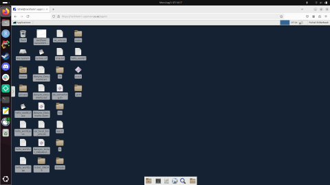
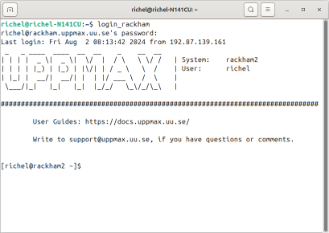

Prepare the environment
Goal
The goal of this page to make sure you can follow the course.
These are the things you need to follow the course:
you can log in to at least one HPC cluster, in at least one way
you can start a text editor
These are discussed in detail below
Note
There will be an opportunity to get help with log in every morning of the workshop at 9:00.
Log in to one of the HPC systems covered in this course
To be done before
Follow the steps in the emailed instructions.
First time you need to use a terminal to set password
When password is set you can begin to use ThinLinc as well.
Warning
When logging in to UPPMAX the first time in ThinLinc, choose XFCE desktop.
On HPC2N, you will use the MATE desktop as default.
Whe logging in to LUNARC the first time in ThinLinc, choose GNOME Classis Desktop.
On NSC you will use XFCE desktop as default.
Warning
When you login to Cosmos, whether through ThinLinc or regular SSH client, you need 2FA
Warning
When you login to Tetralith, whether through ThinLinc or regular SSH client, you need 2FA
See also
These are the ways to access your HPC cluster and how that looks like:
How to access your HPC cluster |
How it looks like |
|---|---|
Remote desktop via a website |
 |
Remote desktop via a local ThinLinc client |

|
Console environment using an SSH client |
 |
These are the ways to access your HPC cluster and some of their features:
How to access your HPC cluster |
Features |
|---|---|
Remote desktop via a website |
Familiar remote desktop |
Clumsy and clunky |
|
Slow on UPPMAX |
|
No need to install software |
|
Works on HPC2N and UPPMAX |
|
Needs 2FA for UPPMAX |
|
Remote desktop via a local ThinLinc client |
Familiar remote desktop |
Clumsy |
|
Need to install ThinLinc |
|
Works on all centers |
|
Needs 2FA for UPPMAX |
|
Console environment using an SSH client |
A console environment may be unfamiliar |
Great to use |
|
Need to install an SSH client |
|
Works on all centers |
Here is an overview of where to find the documentation and a video showing the procedure:
HPC Center |
Method |
Documentation |
Video |
|---|---|---|---|
HPC2N |
SSH |
||
HPC2N |
Local ThinLinc client |
||
HPC2N |
Remote desktop website |
||
LUNARC |
SSH |
||
LUNARC |
Local ThinLinc client |
||
NSC |
SSH |
||
NSC |
Local ThinLinc client |
here . Scroll down to ThinLinc |
|
UPPMAX |
SSH |
||
UPPMAX |
Local ThinLinc client |
||
UPPMAX |
Remote desktop website |
Need help? Contact support:
HPC Center |
How to contact support |
|
|---|---|---|
HPC2N |
||
LUNARC |
||
UPPMAX |
||
NSC |
||
Keypoints
- When you log in from your local computer you will always arrive at a login node with limited resources.
You reach the calculations nodes from within the login node (See Submitting jobs section)
You reach UPPMAX/HPC2N/LUNARC/NSC clusters either using a terminal client or Thinlinc
Graphics are included in Thinlinc and from terminal if you have enabled X11.
- Which client to use?
Graphics and easy to use
ThinLinc
- Best integrated systems
Visual Studio Code has several extensions (remote, SCP, programming IDE:s)
Windows: MobaXterm is somewhat easier to use.
Text editors on the Clusters
Nano
gedit
mobaxterm built-in
See also
Hint
There are many ways to edit your scripts.
If you are rather new.
Graphical:
$ gedit <script> &(
&is for letting you use the terminal while editor window is open)Requires ThinLinc or
ssh -Y ...orssh -X
Terminal:
$ nano <script>
Otherwise you would know what to do!
- ⚠️ The teachers may use their common editor, like
vi/vim If you get stuck, press:
<esc>and then:q!
- ⚠️ The teachers may use their common editor, like
Demo
Let’s make a script with the name
example.py
$ nano example.py
Insert the following text
# This program prints Hello, world!
print('Hello, world!')
Save and exit. In nano:
<ctrl>+O,<ctrl>+X
You can run a python script in the shell like this:
$ python example.py
# or
$ python3 example.py
Prepare the course environment
Prepare your environment now!
Please log in to Rackham, Kebnekaise, Cosmos or other cluster that you are using.
- For graphics, ThinLinc may be the best option.
The ThinLinc app.
- Rackham has access for regular SSH, through a regular ThinLinc client and a through a web browser interface with ThinLinc:
SSH: rackham.uppmax.uu.se
ThinLinc client: rackham-gui.uppmax.uu.se
Web browser interface: https://rackham-gui.uppmax.uu.se
- ThinLinc user guide at UPPMAX
2FA may be needed, which can be handled by logging in with regular SSH, doing 2FA, logging out again, then there is a grace period of some minutes for you to login to ThinLinc. More here:
- Kebnekaise has access for regular SSH, ThinLinc clients, and through a web browser interface with ThinLinc:
SSH: kebnekaise.hpc2n.umu.se
ThinLinc client: kebnekaise-tl.hpc2n.umu.se
From webbrowser: https://kebnekaise-tl.hpc2n.umu.se:300/
- Cosmos:
SSH: cosmos.lunarc.lu.se
- ThinLinc: cosmos-dt.lunarc.lu.se
2FA required! For more info, go here:
Project
The course project on UPPMAX (Rackham) is:
naiss2024-22-1442The course project on HPC2N (Kebnekaise) is:
hpc2n2024-142The course project on LUNARC (Cosmos) is: `` ``
Rackham:
ssh <user>@rackham.uppmax.uu.seRackham through ThinLinc,
- use the App with
address:
rackham-gui.uppmax.uu.seNB: leave out thehttps://www.!user:
<username-at-uppmax>NB: leave out thehttps://www.!
or go to <https://rackham-gui.uppmax.uu.se>
here, you’ll need two factor authentication.
Create a working directory where you can code along. We recommend creating it under the course project storage directory
Example. If your username is “mrspock” and you are at UPPMAX, then we recommend you to create a user folder in the project folder of the course and step into that:
cd /proj/hpc-python-fallmkdir mrspockcd mrspock
Kebnekaise:
<user>@kebnekaise.hpc2n.umu.seKebnekaise through ThinLinc, use the client and put
as server:
kebnekaise-tl.hpc2n.umu.seas user:
<username-at-HPC2N>NOTE: Leave out the@hpc2n.umu.se
Create a working directory where you can code along. We recommend creating it under the course project storage directory
Example. If your username is bbrydsoe and you are at HPC2N, then we recommend you create this folder:
/proj/nobackup/hpc-python-fall-hpc2n/bbrydsoe
Cosmos with SSH:
cosmos.lunarc.lu.seCosmos through ThinLinc:
cosmos-dt.lunarc.lu.seas server:
cosmos-dt.lunarc.lu.seas user:
<username-at-lunarc>NOTE: leave out the@lunarc.lu.se
Create a working directory where you can code along.